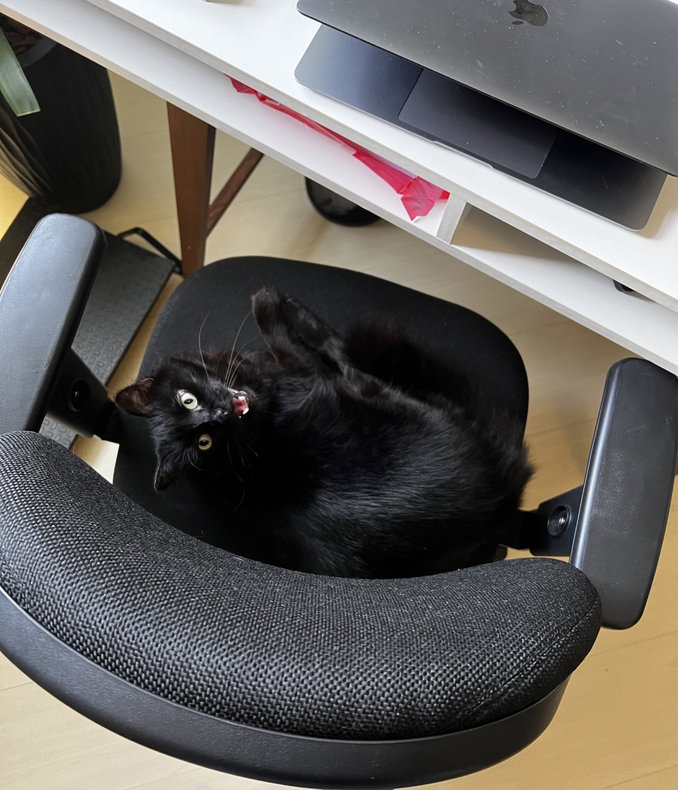
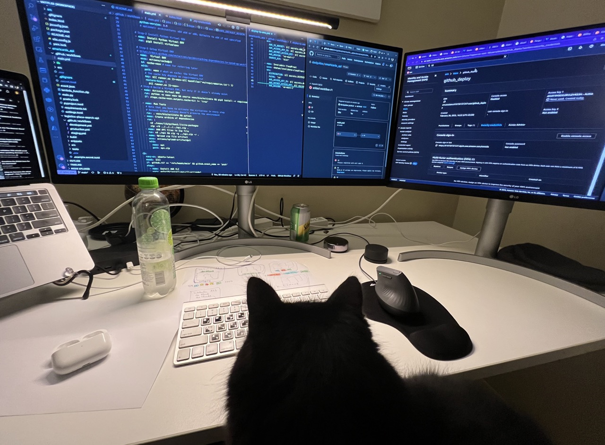
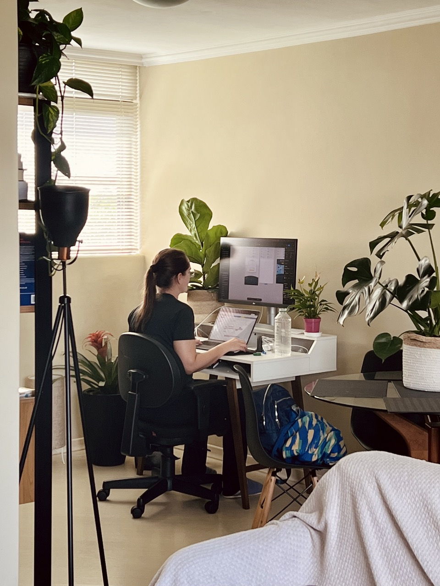
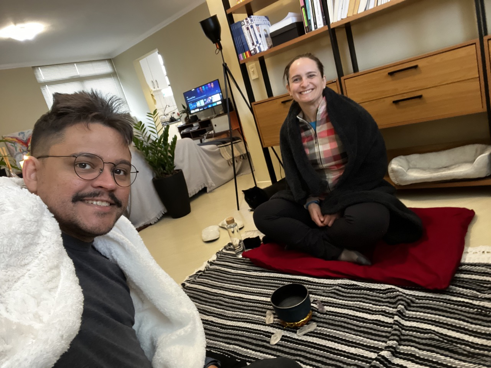

Davi Guides
Hello, I'm a Python Backend Specialist Developer and I have had the opportunity to work on
various
challenging projects, contributing to the success and growth of the companies I have been involved with.
I'm well-equipped to handle projects at different stages, from initial development to scalability and
large-scale operations. I have experience in designing and implementing efficient algorithms, taking into
consideration time and space complexity. I also have skills in system architecture and design, ensuring
optimal performance. I'm open to opportunities where I can apply my expertise to achieve successful outcomes.
Highlights
- With over 19 years of experience in the technology industry, including 15 years as a specialized Python
backend developer, I possess extensive knowledge and expertise in this field.
- Solid experience with web frameworks, libraries, and technologies: Flask, Celery, RabbitMQ, MySQL, MongoDB,
Redis;
- As well as an understanding of: FastApi, Pub/Sub, Elasticsearch, Postgres;
- Experienced in finding appropriate solutions to problems through software architecture;
- Good knowledge of agile software development methodologies: Scrum and Kanban;
- Experience working in small and large remote distributed teams;
- Experience with cloud technologies, mainly with AWS services such as EC2, S3, Route53, CloudWatch, and SQS;
- Strong knowledge of OOP, design patterns, designing application systems from scratch, and database modeling.
I'm always seeking new challenges that allow me to utilize my experience and skills to create innovative and
efficient solutions. I have a passion for programming and continuously update my knowledge to stay aligned with
current best practices and technologies.
I'm studying Data Science for Business to build bridges between the business and technical areas. The course
covers technology, statistics, and business knowledge.
More About Me
I am a very curious and proactive professional with a great capacity to absorb new knowledge. I always seek
to think creatively, practically, and systematically to achieve the most relevant results for the business. I
always ask myself: What pain are we addressing here? How much value and differentiation will this add to the
company? If the answer is positive, I try to understand which part of the whole will bring the greatest impact.
Whether alone or in a group, it is a pleasure to accomplish and see things happen.
As a neurodivergent person with Giftedness, my hyperfocus and commitment are focused on continuous learning and
improvement, respecting both my uncommon abilities, such as divergent deep thinking, whole-detail perspective,
integration of opposing ideas and perspectives, among others, and the limitations of my condition, such as
hyperesthesia and hypersensitivities, among others.
I thrive in projects that offer constant growth opportunities and challenges, particularly those with a
data-driven, pragmatic, ethical, and pluralistic decision-making approach.
Pronouns: He/Him 🌈
Fun fact: I have a beautiful black cat who sometimes shows up to say hello in meetings or do some pair
programming with me.


Other curiosities: once every 15 days, my friend Ana comes over and we do a home co-working session.
Also, once a month, Ana and I have a Spa Saturday, dedicated to being a day of relaxation, with meditation, QiGong and yoga practices, reiki, and more. It's important for us to reduce stress levels and keep our minds fresh and ready for action.

